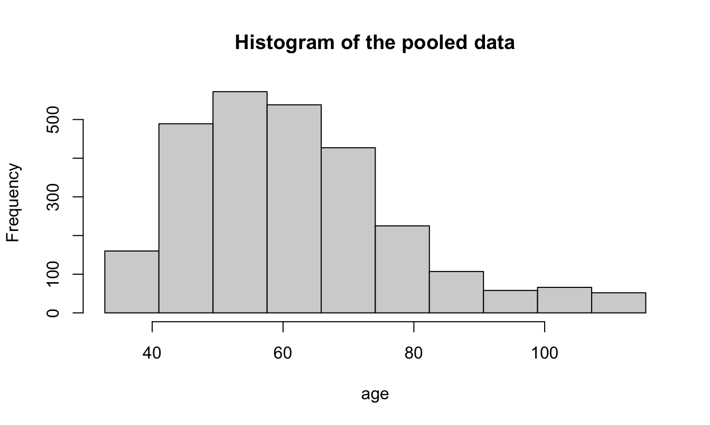
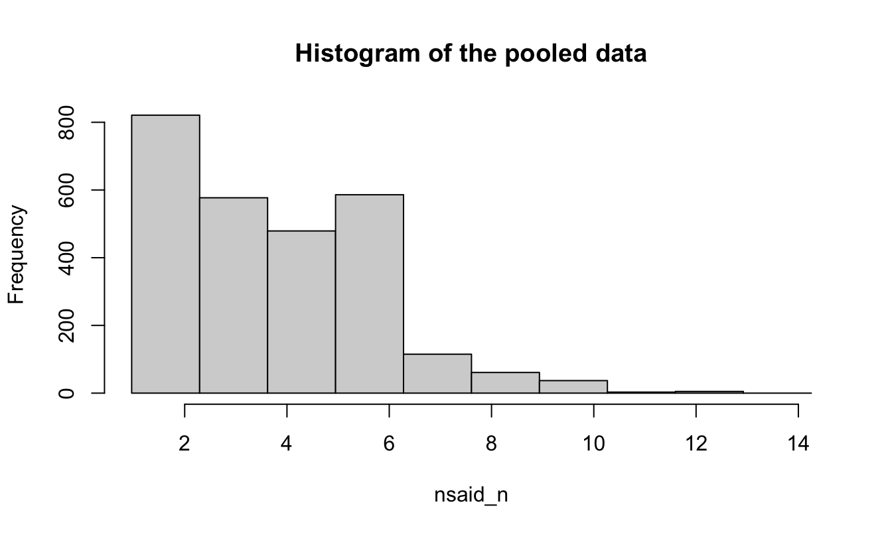
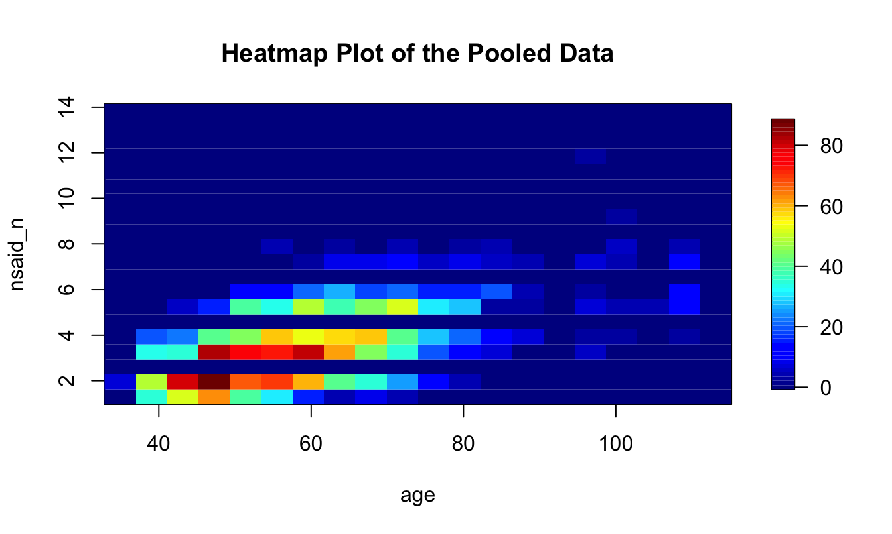

Chapter 8 Observing the extracted variables
The fused frame D is now an ordinary federated data frame, so from here we use
plain dsBaseClient. Every statistic below combines sufficient statistics from
all three sites; every plot is disclosure-controlled on the server before
anything is returned.
8.1 A derived feature: age
We turn birth_year into age as of 2020 with a single server-side expression.
ds.make() reports back that the variable was created and passes its validity
check on every site:
ds.make("(2020 - D$birth_year)", "age")
#> $is.object.created
#> [1] "A data object <age> has been created in all specified data sources"
#>
#> $validity.check
#> [1] "<age> appears valid in all sources"We then confirm the values are sensible — on the first site, age is numeric and
its distribution sits in a plausible human range (the pooled view follows below):
ds.summary("age")[[1]]
#> $class
#> [1] "numeric"
#>
#> $length
#> [1] 889
#>
#> $`quantiles & mean`
#> 5% 10% 25% 50% 75% 90% 95% Mean
#> 41.00000 44.00000 50.00000 59.00000 69.00000 83.00000 98.00000 61.54106The mean age sits near 62 — older than a present-day population, but expected here. The GiBleed cohort is a frozen synthetic snapshot (Synthea-generated, released 2019-05-25, with records ending 2019-07-03), and no person in it is born after 1986. Because the data are fixed at that 2019 horizon we derive age against a constant reference year (2020) rather than the system date: a Sys.Date() value would drift on every rebuild, whereas a fixed anchor keeps the figures in this chapter reproducible.
8.2 Prevalence over the full cohort
Because absent events were zero-filled (Chapter 7), these prevalences are over the whole 2 694-person cohort, not just the persons who happen to appear in a given event table. The outcome, gastrointestinal haemorrhage, affects 479 persons:
ds.table("D$gi_bleed")$output.list$TABLES.COMBINED_all.sources_counts
#>
#> Data in all studies were valid
#>
#> Study 1 : No errors reported from this study
#> Study 2 : No errors reported from this study
#> Study 3 : No errors reported from this study
#> D$gi_bleed
#> 0 1 NA
#> 2215 479 0Its antecedent, peptic ulcer, is more common (802 persons):
ds.table("D$peptic_ulcer")$output.list$TABLES.COMBINED_all.sources_counts
#>
#> Data in all studies were valid
#>
#> Study 1 : No errors reported from this study
#> Study 2 : No errors reported from this study
#> Study 3 : No errors reported from this study
#> D$peptic_ulcer
#> 0 1 NA
#> 1892 802 0Diclofenac exposure covers 850 persons:
ds.table("D$diclofenac")$output.list$TABLES.COMBINED_all.sources_counts
#>
#> Data in all studies were valid
#>
#> Study 1 : No errors reported from this study
#> Study 2 : No errors reported from this study
#> Study 3 : No errors reported from this study
#> D$diclofenac
#> 0 1 NA
#> 1844 850 08.2.1 A finding hiding in the data
The “any NSAID” flag tells us something about how the cohort was built — every single person has at least one NSAID record:
ds.table("D$nsaid")$output.list$TABLES.COMBINED_all.sources_counts
#>
#> Data in all studies were valid
#>
#> Study 1 : No errors reported from this study
#> Study 2 : No errors reported from this study
#> Study 3 : No errors reported from this study
#> D$nsaid
#> 1 NA
#> 2694 0The flag is universal (2 694 / 2 694), so it carries no information for
a model — it is collinear with the intercept. This is why we also extracted
nsaid_n (how many NSAID records) and diclofenac (a specific agent): within
a uniformly-exposed cohort, the burden and the choice of drug are what can
still discriminate. Extracting all three let the data reveal this; we now model
the informative ones.
8.3 Pooled summaries of the continuous features
ds.mean("age", type = "combine")$Global.Mean
#> EstimatedMean Nmissing Nvalid Ntotal
#> studiesCombined 61.93356 0 2694 2694
ds.mean("D$nsaid_n", type = "combine")$Global.Mean
#> EstimatedMean Nmissing Nvalid Ntotal
#> studiesCombined 3.711952 0 2694 2694The pooled quantiles of age:
8.4 Federated plots
A pooled histogram of age across the three sites — drawn from server-side binned counts, never individual rows:

#> $breaks
#> [1] 32.75227 41.02255 49.29283 57.56311 65.83340 74.10368 82.37396 90.64424
#> [9] 98.91453 107.18481 115.45509
#>
#> $counts
#> [1] 160 489 572 538 427 225 107 58 66 52
#>
#> $density
#> [1] 0.007175728 0.021962067 0.025722805 0.024126709 0.019160386 0.010084822 0.004811924
#> [8] 0.002599475 0.002947306 0.002323629
#>
#> $mids
#> [1] 36.88741 45.15769 53.42797 61.69825 69.96854 78.23882 86.50910 94.77939
#> [9] 103.04967 111.31995
#>
#> $xname
#> [1] "xvect"
#>
#> $equidist
#> [1] TRUE
#>
#> $intensities
#> [1] 0.007175728 0.021962067 0.025722805 0.024126709 0.019160386 0.010084822 0.004811924
#> [8] 0.002599475 0.002947306 0.002323629
#>
#> attr(,"class")
#> [1] "histogram"And the distribution of NSAID burden (nsaid_n) — right-skewed, as drug-record
counts usually are:

#> $breaks
#> [1] 0.9633019 2.2922630 3.6212240 4.9501851 6.2791462 7.6081072 8.9370683
#> [8] 10.2660294 11.5949904 12.9239515 14.2529125
#>
#> $counts
#> [1] 821 577 479 586 115 61 37 3 5 0
#>
#> $density
#> [1] 0.2295733933 0.1612422815 0.1336921213 0.1637645190 0.0320458351 0.0168828605
#> [7] 0.0102698832 0.0008464201 0.0013528722 0.0000000000
#>
#> $mids
#> [1] 1.627782 2.956744 4.285705 5.614666 6.943627 8.272588 9.601549 10.930510
#> [9] 12.259471 13.588432
#>
#> $xname
#> [1] "xvect"
#>
#> $equidist
#> [1] TRUE
#>
#> $intensities
#> [1] 0.2295733933 0.1612422815 0.1336921213 0.1637645190 0.0320458351 0.0168828605
#> [7] 0.0102698832 0.0008464201 0.0013528722 0.0000000000
#>
#> attr(,"class")
#> [1] "histogram"A federated heatmap shows the joint density of age and NSAID burden, with the server applying its own anonymisation to the binned surface:

8.5 The key association, previewed
Cross-tabulating the outcome against its antecedent already hints at the result the model will quantify — GI haemorrhage is markedly more frequent among persons with a peptic-ulcer history:
ds.table("D$gi_bleed", "D$peptic_ulcer")$output.list$TABLES.COMBINED_all.sources_counts
#>
#> Data in all studies were valid
#>
#> Study 1 : No errors reported from this study
#> Study 2 : No errors reported from this study
#> Study 3 : No errors reported from this study
#> D$peptic_ulcer
#> D$gi_bleed 0 1 NA
#> 0 1679 536 0
#> 1 213 266 0
#> NA 0 0 0The final chapter turns this into a federated logistic regression.